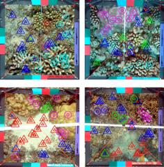

The Moorea Labeled Corals dataset is a subset of the Moorea Coral Reef-Long Term Ecological Research (MCR-LTER) dataset packaged for Computer Vision research. It contains over 400.000 human expert annotations on 2055 coral reef survey images from the island of Moorea in French Polynesia. Each image has 200 expert random point annotations, indicating the substrate underneath each point.
The Moorea Labeled Corals was introduced by Beijbom et.al. in CVPR 2012, Automated Annotation of Coral Reef Survey Images. The data itself is available for downloaded from the Moorea Coral Reef Long Term Ecological Research (MCR-LTER) website.
Each image in the MLC dataset has 200 random points overlaid, each annotated with one of 9 classes, 5 coral genera and 4 non-coral classes. Sample images can be viewed here and sample patches from each of the nine categories here: Acropora, Pocillopora, Porites, Pavona, Montipora, Macro, CCA, Turf, Sand. Metadata on the ecological sampling methodology can be found here.
A MATLAB software development kit is provided to replicate the experiments in the paper. There is also a pre-defined a cost-matrix for MLC which assigns higher costs to classification errors across functional groups, and it's given in the supplementary material of this paper.
We kindly ask that you cite this paper in any results utilizing this data.